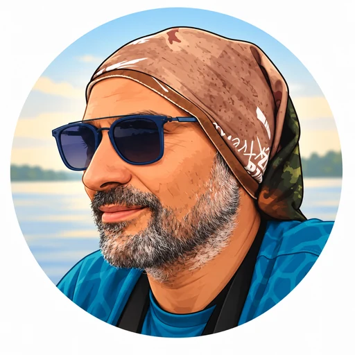

Mapa elaborado con ANAMBRO
Leyenda
N
Escala gráfica
0
ANAMBRO · Aarón Rodríguez González · Docente del Departamento de Geografía e Historia · IES ADEJE
![IES Adeje]()

ANAMBRO nace en el aula. Es un proyecto personal desarrollado por un profesor de Geografía e Historia de instituto para responder a necesidades reales de su trabajo docente: explicar mejor procesos geográficos e históricos, reunir herramientas cartográficas que suelen estar dispersas y crear materiales útiles para el alumnado.
Su desarrollo se realiza de forma independiente, en el tiempo libre de su autor, incorporando nuevas funciones a medida que aparecen necesidades en el aula. Aunque nació para uso propio, el proyecto queda abierto a la comunidad educativa para cualquier docente, estudiante o persona interesada que pueda encontrarlo útil.
Creado desde el aula, para el aula, y abierto a quien pueda encontrarlo útil.
Las últimas versiones amplían ANAMBRO más allá de la consulta: incorpora explicaciones y animaciones interactivas —como Insolación y latitud y Eratóstenes y la medida de la Tierra—, un editor de mapas políticos y mapas mudos para divisiones actuales e históricas, fondos marinos configurables, edición de rellenos y contornos, rotulación desplazable con líneas guía y exportación mediante el compositor cartográfico.
ANAMBRO combina cartografía base y temática, consulta espacial y temporal, mapa 2D y globo 3D, geodemografía mundial, perfiles topográficos y temáticos, mediciones, búsqueda y localización, leyendas dinámicas y composición de mapas para exportación. Las capas pueden consultarse, compararse y combinarse para estudiar el territorio, el paisaje, la población y los procesos históricos en distintas escalas.
ANAMBRO ya no es solo una herramienta de Geografía: la incorporación de cartografía histórica temporal permite utilizarlo también para Historia Universal, relacionando espacio, fronteras, entidades políticas y acontecimientos en distintos momentos históricos.
Distancia: pulsa «Iniciar distancia» y marca puntos sobre el mapa. Área: marca al menos 3 vértices. Pulsa «Terminar» para cerrar la medición. El resultado permanece visible hasta que pulses «Borrar» o inicies otra medición. Después puedes arrastrar cualquiera de los puntos para modificar la medición en tiempo real.
Resultado: —
Cruza unas unidades territoriales (municipios, islas, provincias, comunidades autónomas o países) con una variable (superficie, espacios protegidos, relieve o población) y genera mapa temático, gráfico, tabla, CSV y Excel. Al terminar se indica qué datos se han cruzado.
Selecciona unidades e indicador. Análisis geográfico · versión 2026-10-20 (r53: normales climatológicas de estaciones, climograma modelo PAU, Köppen y Miller)Activa la herramienta y marca tantos puntos como necesites. Puedes crear recorridos rectos, quebrados, sinuosos, semicirculares o circulares. Todos los vértices pueden desplazarse después. Pulsa «Generar perfil» cuando termines.
Resultado: —
Importa un track existente o créalo directamente en ANAMBRO. En modo «Seguir caminos», cada punto nuevo se enruta por la red de OpenStreetMap; puedes alternar con tramos manuales.
Estado: ningún track cargado.
El enrutamiento automático utiliza BRouter sobre datos de OpenStreetMap. Si un camino no está cartografiado o el servicio no responde, cambia «Nuevo tramo» a Manual para continuar sin bloquear el trabajo.